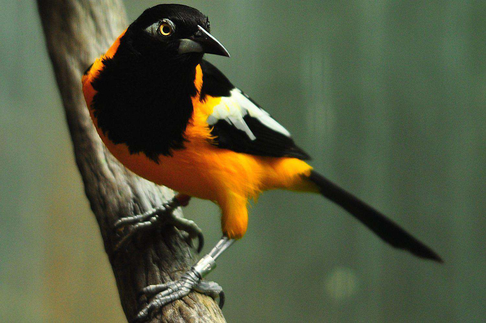

Also known as Tierra de Gracia('Land of grace')

Dancing devils of corpus christi refers to a set of popular Venezuelan religious festivals,held in the city of San Francisco de Yare. The participants, who wear red capes decorated with crosses and a mask of the devil, dance in a group accompanied by loud drumbeats. Decorated with rosary beads, crosses, and maracas, they parade around the streets accompanied by the rhythm of scary musical poems.
The national animal of Venezuela is Venezuelan Troupial
